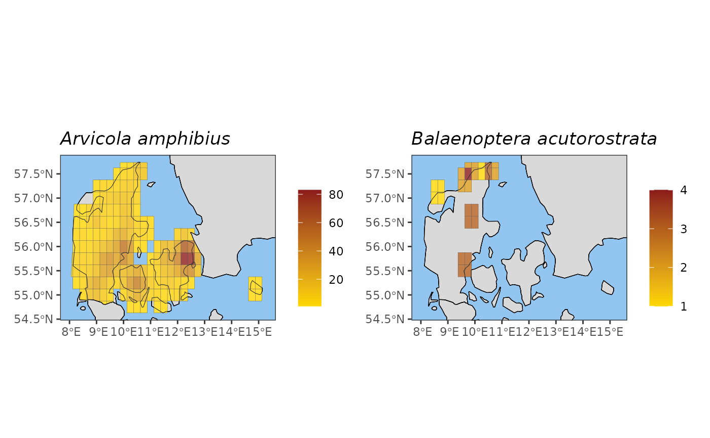

Creates map visualizations of species ranges or species occurrences, providing customization options.
Usage
plot_species_map(
x,
species = NULL,
leg_label_default = NULL,
auto_title = NULL,
suppress_legend = FALSE,
title = "auto",
xlims = NULL,
ylims = NULL,
trans = NULL,
breaks = NULL,
labels = NULL,
Europe_crop_EEA = TRUE,
crop_to_grid = FALSE,
surround = TRUE,
single_plot = TRUE,
panel_bg = NULL,
land_fill_colour = NULL,
legend_title = NULL,
legend_limits = NULL,
legend_title_wrap_length = 10,
title_wrap_length = 60
)Arguments
- x
An 'indicator_map' object containing indicator values associated with map grid cells.
- species
Species you want to map occurrences for. Can be either numerical taxonKeys or species names. Partial species names can be used (the function will try to match them).
- leg_label_default
Default label for the legend, provided by an appropriate S3 method (if calling the function manually, leave as NULL).
- auto_title
Text for automatic title generation, provided by an appropriate S3 method (if calling the function manually, leave as NULL).
- suppress_legend
Do not show legend. This should be set to true when plotting species ranges, as all cell values are 1.
- title
Plot title. Replace "auto" with your own title if you want a custom title or if calling the function manually.
- xlims
(Optional) Custom x-axis limits.
- ylims
(Optional) Custom y-axis limits.
- trans
(Optional) Scale transformation for the fill gradient (e.g., 'log').
- breaks
(Optional) Break points for the legend scale.
- labels
(Optional) Labels for legend scale break points.
- Europe_crop_EEA
If TRUE, crops maps of Europe using the EPSG:3035 CRS to exclude far-lying islands (default is TRUE, but does not affect other maps or projections).
- crop_to_grid
If TRUE, the grid will determine the edges of the map.Overrides Europe_crop_EEA. Default is FALSE.
- surround
If TRUE, includes surrounding land area in gray when plotting at the country or continent level. If FALSE, all surrounding area will be coloured ocean blue (or whatever colour you set manually using panel_bg). Default is TRUE.
- single_plot
By default all species occurrence time series will be combined into a single multi-panel plot. Set this to FALSE to plot each species separately.
- panel_bg
(Optional) Background colour for the map panel.
- land_fill_colour
(Optional) Colour for the land area outside of the grid (if surround = TRUE). Default is "grey85".
- legend_title
(Optional) Title for the plot legend.
- legend_limits
(Optional) Limits for the legend scale.
- legend_title_wrap_length
Maximum legend title length before wrapping to a new line.
- title_wrap_length
Maximum title length before wrapping to a new line.
Value
A ggplot object representing the map of species range or occurrences. Can be customized using ggplot2 functions.
Examples
spec_occ_mammals_denmark <- spec_occ_map(example_cube_1,
level = "country",
region = "Denmark")
plot_species_map(x = spec_occ_mammals_denmark, c(2440728, 4265185))
